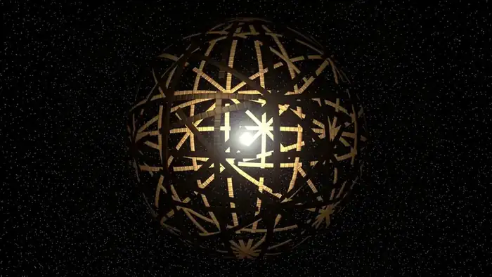
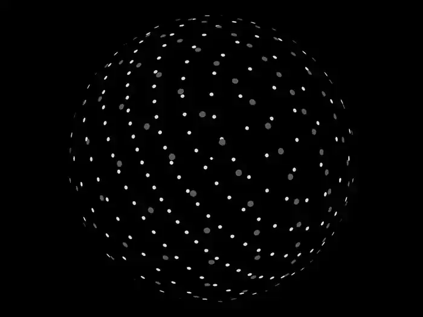
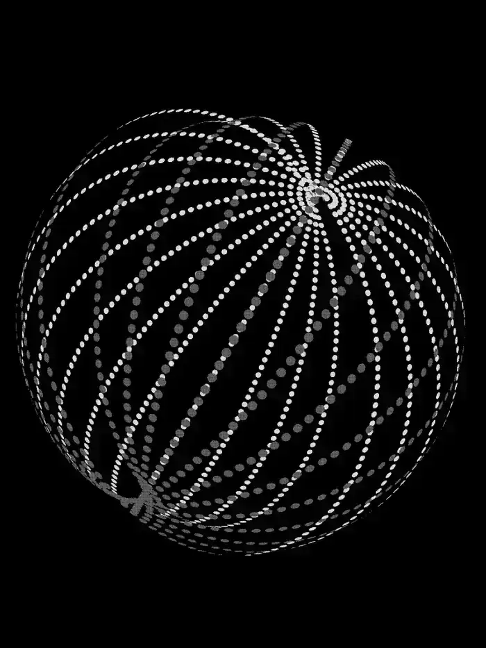

What Dyson actually proposed
In 1960 Dyson argued that a civilisation expanding its energy supply would eventually intercept most of its star's light, and that the energy would be re-radiated as infrared. The consequence is observational: look for stars with anomalous mid-infrared excess and no corresponding visible light.
Maps, diagrams and images






The popular image of a rigid shell is a misreading. A shell would be dynamically unstable and structurally absurd; a swarm of independent collectors in different orbits is the physically sensible version, and it can be built incrementally.
The observational record
Infrared surveys have found candidate excesses. Tabby's Star was briefly the most famous, before dust explained it. Searches of millions of stars in WISE and Gaia data have turned up a small number of unusual objects, none confirmed as artificial.
There is also a thermodynamic argument about detectability: a galaxy-spanning civilisation would be visible in mid-infrared even at enormous distance, and surveys have not found the expected population. That absence feeds into the Fermi problem rather than settling anything.
Mass. A swarm collecting a useful fraction of a Sun-like star's output requires dismantling planets. Mercury's entire mass, spread as thin collectors, gives an area vastly larger than needed; the engineering problem is not mass but self-replication, guidance and orbital stability.
Waste heat. Any collector must radiate what it absorbs. At a comfortable operating temperature the waste is in the mid-infrared — which is exactly why Dyson's argument is a search strategy and not a building plan.
Why it is a live debate: the physics of the signature is sound and the engineering is speculative. Claims that a specific star 'is' a Dyson structure have all failed; the search itself is legitimate science.
The archive labels this live debate rather than fringe because the observational programme exists and publishes, while the confident identifications belong to the fringe.
Why it is in the archive
Because it is the clearest example of a speculative idea that generated a real observing programme, and because the popular version (a metal shell, built by aliens) is not the version anyone defends.
Related: dark forest strategy, and Kardashev bottlenecks for the thermodynamic ceiling on this kind of growth.
Sources for this page
- Wikipedia, “Dyson sphere” — origin, variants, searchesen.wikipedia.org
- Wikipedia, “Tabby's Star” — the dust explanationen.wikipedia.org
- Wikipedia, “Kardashev scale” — energy classificationsen.wikipedia.org
- NASA WISE mission — the infrared survey data used in searcheswise2.ipac.caltech.edu
Open resources on this topic
- PapersOpen-access articles: DOAJ · PubMed Central · Internet Archive Scholar
- BooksPublic-domain and borrowable copies: Open Library · Project Gutenberg · Google Books · Internet Archive
Cite this page
Momin, S. (2026). Dyson Swarms. The Larger World Archive. https://drsamonline.github.io/LARGE_GLOBE/dyson-swarms.htmlMomin, Sohil. “Dyson Swarms.” The Larger World Archive, 2026, https://drsamonline.github.io/LARGE_GLOBE/dyson-swarms.html.Momin, Sohil. “Dyson Swarms.” The Larger World Archive, 2026. https://drsamonline.github.io/LARGE_GLOBE/dyson-swarms.html.@misc{dyson2026dyson,
author = {Momin, Sohil},
title = {Dyson Swarms},
year = {2026},
howpublished = {The Larger World Archive},
url = {https://drsamonline.github.io/LARGE_GLOBE/dyson-swarms.html},
note = {Last reviewed 20 November 2026}
}Last reviewed 20 November 2026 · Corrections policy · this page is not peer reviewed